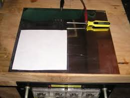
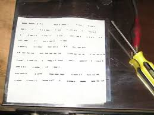
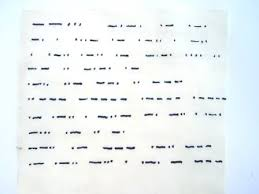

Chimica ed Elettricità, recita il tema del Carnevale della Chimica, ospitato per questa settima edizione sul blog Storie di Scienza di Giovanni Boaga.
Quale migliore occasione per rendere un piccolo omaggio sperimentale ad un prolifico inventore scozzese poco conosciuto?
Alexander nacque nel 1811 nello sperduto paesello di Thurso, all'estremo nord delle brughiere scozzesi, e fu uno dei tredici figli della famiglia Bain.
Interessatosi fin da giovane alle scienze, divenne valente costruttore di orologi lavorando prima ad Edimburgo e poi a Londra.
Suoi sono numerosi brevetti, il primo dei quali ottenuto nel 1841 riguardo un ingegnoso orologio a pendolo elettrico la cui energia di movimento non era data da molle o pesi ma da due elettrocalamite alimentate da una "earth battery" ...una coppia di piastre di rame e zinco poste sotto terra!
L'orologio si è fermato? Basta una secchiata d'acqua! (Ma forse in Scozia la siccità non era un problema...).
Nel 1846 brevettò un sistema a nastro perforato, simile a quello dei primi computer, che permetteva una trasmissione molto più veloce dei caratteri Morse, e addirittura l'anno successivo un sistema per controllare strumenti musicali ad aria controllandone il flusso usando ancora bande perforate.
Probabilmente quei deliziosi organetti che si vedono oggi solo nei musei sono derivati dall'opera del suo ingegno.
Sempre del 1846 è la sua invenzione principale (che successivamente lo porterà alla costruzione della prima macchina fax-simile) ovvero il telegrafo chimico, che è oggetto della odierna e molto più modesta sperimentazione da parte dell'autore di questo blog.
Il telegrafo chimico di Bain aveva lo scopo di migliorare le prestazioni dei ricevitori Morse, soggetti a problemi elettromeccanici che non ne consentivano una velocità oltre un certo limite; eliminando elettrocalamite ed ancorette magnetiche, il nostro inventore riuscì a costruire una macchina con la quale si trasmisero 282 parole in 22 secondi, un vero record per l'informazione del tempo!
L'idea era la seguente: un nastro di carta impregnato di una soluzione di ferrocianuro di potassio e nitrato ammonico era fatto scorrere tra due rulli, mentre una rotellina in funzione di "pennino" era tenuta sempre in contatto con la carta; i rulli erano collegati al polo negativo del circuito telegrafico trasmittente e costituivano il catodo, il pennino era collegato al polo positivo (anodo).
Al passaggio della corrente avveniva una reazione elettrochimica e in corrispondenza dell'anodo si aveva istantanea formazione di blù di Prussia (ferrocianuro ferrico) che lasciava una traccia blù ben visibile sul nastro di carta, naturalmente solo nei momenti in cui l'elettrodo era percorso da corrente; gli unici organi in movimento erano quindi solo quelli necessari al trascinamento del nastro.

Ho provato a replicare l'esperimento del nostro amico scozzese in maniera semplice ed estemporanea, tenendo ferma la carta e muovendo a mano il pennino: basta il principio, per il resto ci fidiamo... giusto Alexander?

Le foto mostrano la base di scrittura, costituita da un foglio di acciaio inox con la carta imbevuta del "liquido di Bain" (0,5 g di K4[Fe(CN)6] + 0,5 g di NH4NO3 in 10 ml di acqua) e l'esito della prova dopo aver collegato la base al negativo dell'alimentatore ed il "pennino" (un piccolo cacciavite) a +8 V.

Il messaggio, per i pochissimi che non conoscessero il Morse, dice:
"7 Carnevale della Chimica luglio 2011 Alexander Bain Paoloalberto"
Purtroppo rischio di essere finito anch'io fra quei pochissimi perchè, essendo fuori allenamento da qualche anno e avendo fretta di scrivere, ho commesso tre stupidi errori di battitura... pardon, di "cacciavitatura"! (mancano due lettere e al posto di una "p" c'è una "z"!
Li vedete gli errori? Non avevo voglia di ripreparare un altro foglio e rifare tutto...
Come si vede i caratteri sono ben visibili; la nitidezza lascia invece un po' a desiderare, ma la colpa è dei rudimentalissimi attrezzi di scrittura dei quali mi sono servito, visto che non avevo a disposizione una bella macchinetta ottocentesca in ottone.
Ho provato a scrivere anche in corsivo e con un po' di esercizio ci si riesce perfino in bella calligrafia!
Il telegrafo chimico di Bain evidentemente aveva più difetti (facilmente immaginabili) che pregi, tant'è che presto fu relegato nel dimenticatoio e si continuarono ad usare apparecchi Morse elettromeccanici fin quasi alla metà del secolo scorso.
Lo stesso Bain, poco smaliziato negli affari come quasi tutti gli inventori, finì povero e paralitico e morì all'Ospedale degli Incurabili a Kirkintilloch, Scozia, nel 1877.
Il suo telegrafo chimico rimane tuttavia una interessante curiosità scientifica e storica, che mi è piaciuto far rivivere per un attimo.